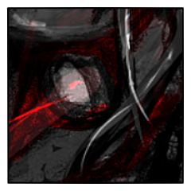
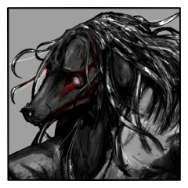
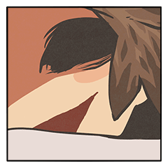

GM
◆メインフェイズ第3サイクル第三シーン シーンプレイヤー：霽月
霽月
2D6>=5 （判定：憑依術）
ShinobiGami : (2D6>=5) ＞ 7[2,5] ＞ 7 ＞ 成功
鴟尾 鴞字郎
「いやあ、参った。見抜かれちまったよ」
鴟尾 鴞字郎
「で、どうだ？おれのこたぁ分かったかい？え？」
鴟尾 鴞字郎
「見るのは気分がいいが、見られるのは好かねえ」
鴟尾 鴞字郎
「舞台に下りず、傍観に徹していてえんだ」
GM
【追加の秘密：鴟尾 鴞字郎】
あなたはあと一度だけ、魔刀『化生鏖刃』を鍛え上げることが出来る。
鍛えるための宣言は自分がシーンプレイヤーのドラマシーンで行うこと。
宣言した場合、この秘密は公開される。
また、その場合あなたはクライマックスフェイズ終了時に死亡する。
この刀の力を使って妖魔化した者は、必ず制御判定に失敗し、
エンディングフェイズで新たなる終末の獣と化す。
あなたは刀の使用者になれない。
あなたには更にもうひとつ秘密がある。
鴟尾 鴞字郎
「人を寄ってたかってよ。さっさと殺し合ってりゃいいもんを」
鴟尾 鴞字郎
「ええ、娘っ子。おいらを探るつもりかい。おいらが怖くねえってかい」
鴟尾 鴞字郎
「てめェもてめェで、邪魔なんだよなァ……」
境 清花
「……あなたにとって邪魔でないものなど」
境 清花
「都合が良いという以上のことはございませんでしょう」
境 仁悟
「雑念のあるままでは、俺の刀も鈍るかもしれん」
鴟尾 鴞字郎
「知らねえよ。そいつぁ負けた時の言い訳か？」
霽月
「これから見せるものは、俺が見舞える限りの見世物になるだろう」
霽月
「生憎、その支払いを受け取りは、俺には間に合わないだろう。それはいささか心残りではある、が」
境 清花
「……ええ。わたくしの目の前に、霽月さまはおられます」
霽月
「お前が霽月と呼ぶたびに、そう唇が動くたびに」
霽月
「昨晩、血化粧を照らしていた満月も、今宵となればわずかながらに欠けている」
霽月
「月をわずかにすり減らすほどの時間を、お前と過ごした」
霽月
「お前が霽月と名付けた男の時間は、それが全て」
霽月
「霽月という男は、喰らわれて無くなるかもしれん」
霽月
「あるいは戦いの果てに、再びここに戻るかもしれん」
霽月
「それまでお前の心を居所とさせてやってくれ」
『終末の獣』
その声に応えるように遠吠えが響いた。
GM
【世界忍者戦】の効果
世界忍者戦が使用された場合、この情報を公開する。
1.クライマックスフェイズで6ラウンドが経過する前に世界忍者戦の使用者が死亡していない場合、世界は終わり新たな世界が始まる。
2.プライズ【居所】を持っているキャラクターはその時点で消滅する。
3.世界忍者戦が倒れた場合、プライズ【居所】を持っていないキャラクターは戦闘終了時に消滅する。
GM
プライズ【居所】を奪ったその場で廃棄することを許可します。

《終末の獣》
月夜に白く照っていた面は、その光をも喰らうかのように、黒く染まりゆく。

《終末の獣》
その黒は、まるで月が蝕まれるかのごとく、男の姿を飲み込む。
《終末の獣》
・失っている記憶と感情の回復 を使用。

鴟尾 鴞字郎
「きひっ！きははは！せっかちめ！」
鴟尾 鴞字郎
「確かにこいつぁ、最高の見世物だった！」
鴟尾 鴞字郎
「あとは好きなだけ、おいらの事を探りゃあいい！」
鴟尾 鴞字郎
「ああ、危なかった。本当にヒヤッとしたよ」
鴟尾 鴞字郎
「どうやらこれで、使命は果たせそうだ」
境 仁悟
「いずれにせよ俺とこの《獣》は、もはや戦わねばならぬ」
境 仁悟
「……しかし、真実を知らずに戦いに至るわけにはいかんだろう」
境 仁悟
「叶うならば、俺とともに、あの家へ帰ってくれ」
GM
◆メインフェイズ第三サイクル第四シーン シーンプレイヤー：境 清花
境 清花
「……わたくしは、一度、申し上げました」
境 清花
「……わたくしには、その資格がございません、と」
境 清花
「……仁悟さんは、それでも良いと、仰ってくださいました」
境 清花
「わたくしは、そう思ったまま……資格のないまま、仁悟さんの隣には」
境 仁悟
終末の獣を前にして、ふと言葉を喪ったように。
境 仁悟
困ったように微笑んだまま、男はあなたを見つめている。
境 清花
「……一度、なくしてしまった記憶を取り戻すすべは、もう、ありはせず」
境 清花
「抜け殻となってゆく愛を、……愛と呼び続けることを、わたくしは、自分に許すことも、できません」
境 仁悟
口許にわずか笑みをたたえたまま、男は目を伏せる。
境 清花
「わたくしが……わたくしの気持ちが喪われたら」
境 清花
「思い出の中にだけ、置いてくださいまし」
境 清花
「ずいぶんと、お楽しみいただいたでしょう」
鴟尾 鴞字郎
「いい男二人に囲まれて、揺れ動く気分ってな、どんなもんだい？」
境 清花
「……もはや揺れることも許されはしません」
鴟尾 鴞字郎
「あれを生かすことの意味が分からんわけじゃあるまい」
境 清花
「世界のためにというわけでも、ありはしないでしょう」
鴟尾 鴞字郎
「まあ、世界なんてなァ、どうでもいいが」
鴟尾 鴞字郎
「終末のより先においらが消えちまっちゃあ、刀の終わりは見届けらんねェからよ」
鴟尾 鴞字郎
「邪魔ァするなら、混ぜてもらう。坊やの側にな」
境 清花
「いまさら……あなたの肚のうちを、このような言葉で知ろうとは思いませんが」
鴟尾 鴞字郎
「忍に、感情なんてモンは要らねえんだ」
鴟尾 鴞字郎
「あそこで終末のと会いさえしなけりゃ、こうなる事も無かったろうにな……」
境 清花
鴟尾鴞字郎の秘密を抜きます。判定は罠術。
境 清花
2D6+2>=5 （判定：罠術）
ShinobiGami : (2D6+2>=5) ＞ 10[4,6]+2 ＞ 12 ＞ 成功
GM
【最後の秘密：鴟尾 鴞字郎】
あなたは自らの【使命】を果たすため、わが子との記憶を捨てた。
もし記憶を取り戻してしまったなら、あなたはわが子を殺せなくなる。
その場合、あなたの【使命】は『終末の獣』を守ることに変更される。
鴟尾 鴞字郎
「…………満足かい。人の心の奥底を暴いて」
境 清花
「忍に感情などいらないとおっしゃいましたね」
境 清花
「……愛を抱いたまま使命を果たす、お覚悟が足りなかったのですね」
鴟尾 鴞字郎
「くだらんね。邪魔なもんを捨てただけの事」
境 清花
「揺れ動く気持ちなど、わたくしに尋ねずともご存知だった」
境 清花
「覚えておけたはずのものを、抱えてゆくこともできず」
境 清花
「覚悟の足らずを、邪魔なものだと、そうすり替えて」
境 清花
「覚えておけぬわたくしのことを嘲笑って」
境 清花
「ずいぶんな振る舞いですね、鴞字郎さま」
鴟尾 鴞字郎
「届かねえ、届かねえ。まったくの他人事」
鴟尾 鴞字郎
「過去の“おきょう”に何を投げかけたとて、鴟尾鴞字郎は何も感じねえ」
鴟尾 鴞字郎
「“おきょう”はあるいは今この瞬間も、その言葉に突き刺されて泣いてるかもしれねえ。だがそりゃ、おいらじゃねえんだ」
鴟尾 鴞字郎
「おいらを戻す道を今さっき断ったのが、そこの隣に立つ獣」
境 清花
「あなたの刀の折れるとき、……同じように、折れてくださいまし」
鴟尾 鴞字郎
「要らねえ全部、心も息子もここで消し去って、ひとつ過去の清算とするか！」
《終末の獣》
「すべてを斬り伏せる刃。一切鏖殺。化生鏖刃」
《終末の獣》
「俺に出来ることはただ、殺すことのみ」
境 仁悟
「あの刀を折るために、この化粧応神がある」
境 仁悟
「それでもなお忍びとして使命を果たそうとするなら」
鴟尾 鴞字郎
「ハ。別にいいけどね……お役目を忘れるんじゃないよ」
《終末の獣》
幾多の血を吸ってきた。その瘴気が刀身から漏れる。
境 仁悟
愛する者の血を啜った神刀が、月の光を受けて白々と輝く。
GM
選択はなされましたが、クライマックスはこれから。
GM
次回クライマックスフェイズ、二日後から再開となります。よろしくお願いします。